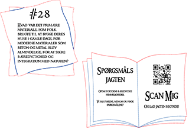
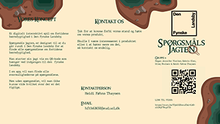

Portfolio
Som multimediedesigner studerende får jeg en bred vifte af kompetencer, som gør at jeg vil kunne håndtere mange forskellige opgaver.
Jeg vil primært kunne hjælpe med portrætbilleder, produktbilleder, lave folder/flyves, designe et nyt logo, og kode i HTML og CSS.
Herunder viser jeg nogle eksempler på nogle af de ting jeg endtil videre har arbejdede på.
Portotyper

Prototyper til vores ene projekt.
som jeg først tegnede i illustrator, og herefter laserprintede på MDF-plade.
Portrætbilleder

Dette er et billede af
mine egne børn, som jeg har redigeret i Photoshop og Ligthroom.
Animation
Denne lille animation er lavet i forbindelse med en workshop.
Selve tegningen er tegnet i illustrator, hvorefter jeg så har lavet kodningen til den.
Logo'er
Begge logo'er er lavet i illustrator.
Det første lavede jeg i forbindelse med vores ene projekt.
Det andet er lavet til og for mig selv.
Folder/flyves
Flyver som er lavet i indesign i forbindelse med vores projekt.
HTML & CSS
På billederne ses kodningen til den lille animation som jeg havde længere oppe.
Dette er kun et lille uddrag af hvad jeg kan.
Så kontakt mig endelig og hør om jeg kan hjælpe dig.